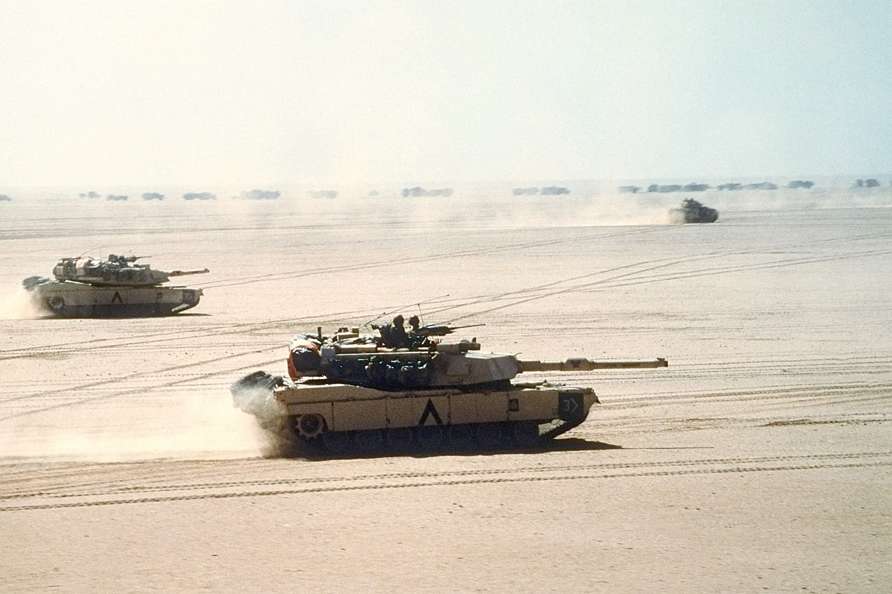
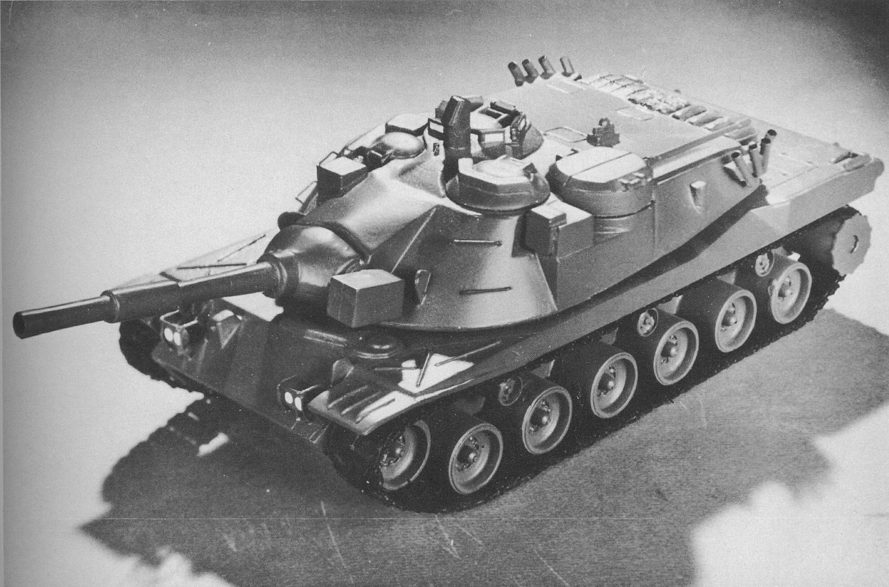
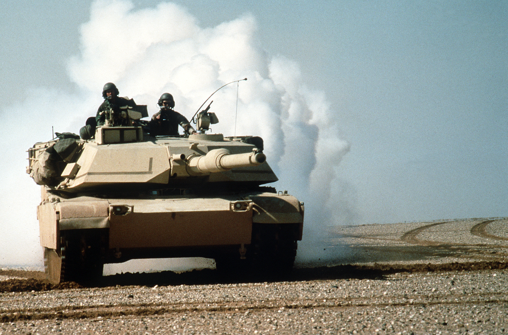
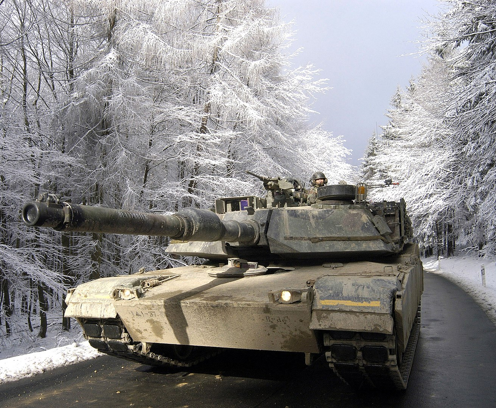
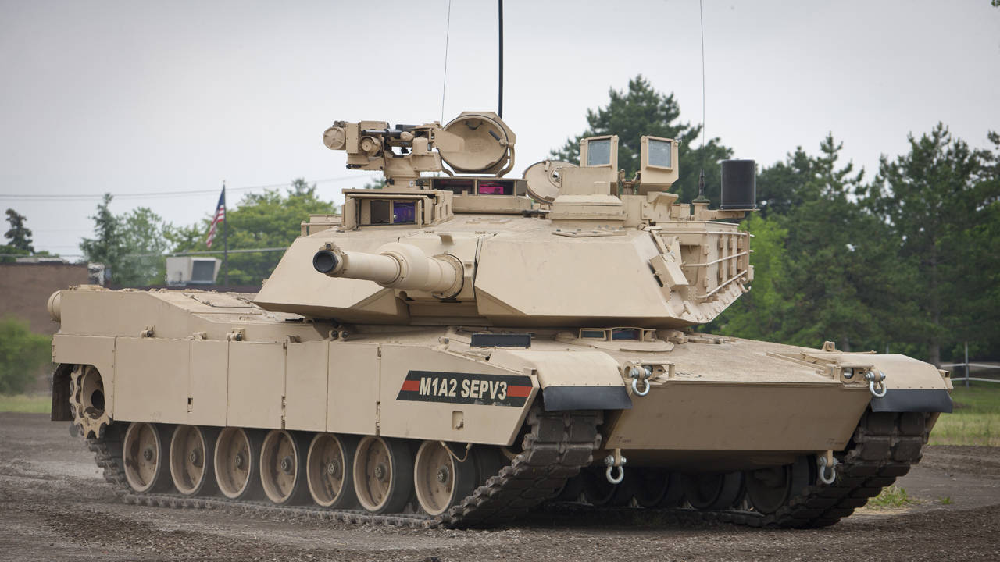

M1 Abrams
Oсновний бойовий танк третього покоління виробництва Сполучених Штатів. Танк названо на честь генерала Крейтона Абрамса, колишнього начальника штабу Армії США і командувача збройними силами США у В'єтнамі з 1968 по 1972 рік. Abrams був створиний щоб воювати проти новітніх такнів ССР , а точніше т80 . Та для того щоб замінити застарілі М60.
Історія створення
У 1960-х роках США та ФРН почали розробку танка MBT-70, щоб замінити застарілий M60. Проєкт виявився амбітним, але неуспішним через високу вартість і технічні проблеми. Після провалу MBT-70 було створено спрощену версію XM803, яка також виявилася дорогою і недостатньо ефективною. У 1971 році Конгрес США припинив фінансування обох проєктів і спрямував кошти на розробку нового танка XM815 (пізніше перейменованого на XM1 «Абрамс»). Для зниження ризику танк вирішили озброїти перевіреною 105-мм гарматою з можливістю модернізації до 120 мм. У 1976 році компанії Chrysler Defense і General Motors представили прототипи танка, оснащеного 105-мм гарматою Royal Ordnance L7. В результаті було обрано газотурбінний двигун від Chrysler. У 1980 році перші танки M1 надійшли на озброєння. У 1986—1992 роках було вироблено близько 6000 танків версії M1A1, які отримали 120-мм гладкоствольну гармату і поліпшену броню. Незважаючи на технічні досягнення, в 1990 році M1 зазнав критики через високу вартість та споживання палива порівняно з Leopard 2.
Захист
Захисне фарбування та маскування
Танки серії M1 Abrams піддавалися різним варіантам фарбування залежно від умов, в яких вони експлуатувалися. Спочатку танки були пофарбовані в темно-зелений колір або використовували камуфляж НАТО (чорний, темно-зелений, темно-брунатний). Для операцій в пустелі, наприклад, під час операції «Буря в пустелі», танки були перефарбовані в піщані відтінки. Додатково танки оснащуються системами димових гранат для створення димової завіси, яка блокує теплове і інфрачервоне наведення ворога.
Система активного захисту
Танки Abrams обладнані комплексом AN/VLQ-6, який може перешкоджати наведенню протитанкових ракет, таких як російські 9К111 «Фагот» або 9К113 «Конкурс». Ця система випромінює інфрачервоні сигнали, які збивають з курсу ракети. Однак недолік полягає в тому, що ракети не знищуються, а просто вибухають у неправильному місці.
Броня
Броня танків серії M1 заснована на британській технології «Чобгем» і є багатошаровою композитною системою, що включає сталь, кераміку та кевлар. Починаючи з 1987 року, броню було вдосконалено елементами зі збідненого урану, що значно підвищило її стійкість до протитанкових снарядів. Танк також може бути оснащений динамічним захистом для додаткового захисту від кумулятивних боєприпасів і протитанкових ракет.
Система пожежогасіння та захист екіпажу
Для запобігання вибухів боєприпасів танк має броньовані відсіки з викидними панелями, які забезпечують евакуацію вибухової енергії назовні. Система пожежогасіння автоматично реагує на пожежі у відсіку екіпажу, гасить їх за лічені секунди, що додатково захищає екіпаж.
Модернізація для боїв в міських умовах (TUSK)
Комплект Tank Urban Survival Kit (TUSK) був розроблений для підвищення ефективності танків Abrams у міських умовах. Він включає додаткові елементи динамічного захисту, протикумулятивні решітки та тепловізори, що дозволяє краще протистояти засідкам у міській забудові. Також встановлюються додаткові кулемети та щитки для командира та навідника.

Система керування вогнем
Танки Abrams оснащені складною системою керування вогнем, яка дозволяє точно наводити гармату за допомогою лазерного далекоміра, тепловізора і баллістичного комп'ютера. Командир танка також може вести вогонь замість навідника завдяки своїй системі прицілювання.
Захисні та бойові системи танків Abrams постійно модернізуються для адаптації до сучасних умов ведення бою, що робить їх ефективними як у відкритому бою, так і в міських умовах.
Озброєння
120-мм нарізна гармата M256:
Це модернізований варіант британської гармати L7, яка використовувалась на більшості основних бойових танків західного світу до кінця 20 століття. Боєкомплект гармати складається з 55 унітарних снарядів, які включають: Бронебійні оперені підкаліберні снаряди (БОПС) з піддоном, що відділяється: М735, М774, М833, М900. Кумулятивні снаряди: М456А1 та М456А2 Бронебійно-фугасні снаряди: М393А2. Снаряди з готовими стрілоподібними вражаючими елементами: М494. Димові снаряди: М416 (на основі білого фосфору). Боєкомплект складається з унітарних снарядів з гільзою, яка частково згорає. Основні типи снарядів: Бронебійні оперені підкаліберні снаряди (БОПС): М829, М829А1, М829А2, М829А3. Кумулятивні снаряди: М830. Підкаліберні кумулятивно-осколкові снаряди: М830А1. Бетонобійні фугасні снаряди: М908. Картечні снаряди: М1028 (з вольфрамовими кульками для протипіхотного застосування на відстані до 600 м).
Додаткове озброєння
Кулемети: 12,7-мм кулемет M2HB: У комплекті TUSK (Tank Urban Survival Kit) кулемет M2HB може бути замінений на гранатомет Mk 19. 7,62-мм кулемет M240: Один з них встановлений перед люком навантажувача, інший спарений із основною гарматою. Можлива установка кулеметної системи M134 Minigun як додаткового озброєння. Система керування вогнем Балістична система керування вогнем дозволяє екіпажу обчислювати дані для стрільби. Навідник використовує основний приціл GPS, оснащений лазерним далекоміром і тепловізійним приладом для ведення вогню в умовах обмеженої видимості. Командир може користуватися своїм перископічним прицілом і також має можливість дублювати функції навідника.
.jpg)
На башті танку можна побачити кулемети : один 12.7 M2HB , а інший це керований 7.62 M240
Модифікації
XM1: експериментальна модель. 9 зразків вироблено у 1978.
M1: Перший прийнятий на озброєння варіант. Виробництво розпочалося у 1979 та тривало до 1985 (3 273 танків створено для США);
M1IP «поліпшена версія» (англ. Improved Performance): Вироблявся короткий термін у 1984 напередодні випуску M1A1. (894 екземплярів створено для США). Посилено лобове бронювання корпусу і башти (рівень M1А1), модернізована підвіска і трансмісія, введений електро спуск ЗПУ
M1A1: Виробництво розпочалося у 1985 та тривало до 1992. (4 976 екземплярів створено для армії США, 221 для КМП, 755 для Єгипту, 59 M1A1 AIM SA продано до Австралії).
M1A1HA «посилена броня» (англ. Heavy Armor): Встановлена перша версія броні зі збідненим ураном.
M1A1HC «посилене обладнання» (англ. Heavy Common): обладнання другої версії броні зі збідненим ураном.
M1A1D «цифровий» (англ. Digital): удосконалена система бойового управління M1A1HC, до рівня M1A2SEP, вироблено для 2 танкових батальйонів.
M1A1AIM v.1 «інтегроване управління Абрамсу» (англ. Abrams Integrated Management): модернізація раніше побудованих танків. Тепловізор другого покоління для навідника, безпечний для очей лазерний далекомір, тепловізійний прилад спостереження для механіка-водія, система управління військами FBCB2, телефон для зв'язку з піхотою.
M1A1AIM v.2/M1A1SA (англ. Situational Awareness): удосконалення до рівня AIM v.1 танків та 3-тя генерація броні зі збідненим ураном.
M1A1FEP (англ. Firepower Enhancement Package): удосконалення до рівня AIM v.2 для морської піхоти.

M1A1KVT (англ. Krasnovian Variant Tank): M1A1 симуляція танків радянського виробництва для використання на Національному тренувальному центрі ЗС США.
M1A1M: експортний варіант для армії Іраку.
М1А2 (основний): Виробництво розпочалося у 1992 (77 побудовано для США та більш ніж 600 M1 удосконалено до рівня M1A2, 315 для Саудівської Аравії, 218 для Кувейту). Автономний тепловізійний панорамний приціл командира, новий приціл навідника із стабілізацією в двох площинах і безпечним для очей далекоміром, нова командирська башточка з 8 перископами (замість 6), тепловізійний прилад спостереження для механіка-водія, бойова система IVIS, з інформаційним-керуванням. Посилене бронювання. Боєкомплект 42 постріли до гармати.
M1A2 SEP (англ. System Enhancement Package) — кілька поколінь модернізації (SEP v2, SEP v3, SEP v4).
M1A2K — спеціальна модифікація для армії Кувейту.